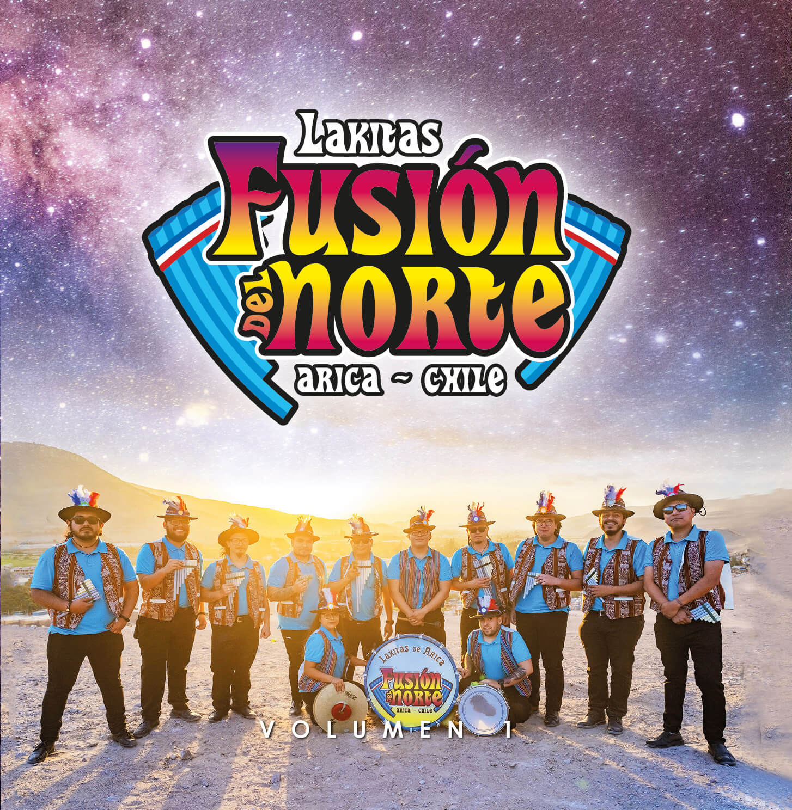

Proyecto
La profundidad y riqueza contenida en la historia de las comparsas de lakitas en el extremo norte de Chile son rasgos que por más de una década hemos pretendido poner en valor y difundir. Es con ese objetivo en mente que desarrollamos una serie de iniciativas como el disco recopilatorio “Lakitas de Arica. Una historia fonográfica” (FONDART 2009), el libro “Arica. Lakitas” (FONDART 2010) y las producciones fonográficas “Wuayna Marka. Pueblo joven de sopladores” (FONDART 2018) y “Lakitas de Arica Los Mollo. Imitados pero jamás igualados” (FONDART 2019).
Tras trabajar por años, en el marco de los proyectos anteriormente referidos, con agrupaciones consideradas fundacionales dentro de la escena musical nortina, con el proyecto “Lakitas de Arica. Fusión del Norte” (FONDART 2020) quisimos cambiar de perspectiva para explorar el estado del arte de las comparsas de lakitas ariqueñas desde sus más nuevos exponentes.
El caso de Lakitas Fusión del Norte refleja un proceso común -y natural- en las agrupaciones musicales de los más diversos géneros, la escisión de uno o varios grupos para la formación de un nuevo ensamble (más detalles en la sección Historia). Cuando esta escisión responde a la búsqueda de nuevos horizontes por parte de músicos que en su momento formaron parte de las nóveles generaciones de viejas escuelas musicales, se abre una interesante y fructífera veta que merece atención.
Libres del peso de la tradición y el concepto musical de sus antiguos caporales (líderes), los sopladores en sus nuevas agrupaciones encontrarán el espacio propicio para dar rienda suelta a su creatividad. Allí podrán desarrollar novedosos estilos, fusionando elementos folklóricos, populares y modernos para seguir haciendo historia en el dinámico ámbito de las lakas nortinas.
Concretar este proyecto con Lakitas Fusión del Norte nos ofrece la posibilidad de ser partícipes activos de la constante actualización de una ancestral tradición musical. Una tradición que sigue pujante gracias a la tenacidad y versatilidad de los sopladores nortinos, quienes en sus incesantes trajines llevan consigo alegría, solemnidad y devoción a los más diversos festejos urbanos, sin desligarse nunca de las costumbres de los pequeños poblados del interior.
Las secciones que conforman esta página web ofrecen un recorrido por la historia de la comparsa Fusión del Norte, sus músicos, las andanzas del conjunto y su repertorio predilecto. El disco musical fruto del proyecto queda aquí disponible para ser escuchado en línea o descargado íntegramente en alta calidad.
Las grabaciones del disco tuvieron lugar en un estudio al aire libre instalado en las dependencias del Restaurant La Chinita Azapeña, Sector Santa Irene Azapa, km 20 valle de Azapa. Los músicos, 9 sopladores y 3 percusionistas, fueron convocados allí para un total de cuatro sesiones, realizadas los días 16, 17, 23 y 24 de octubre de 2021

Esperamos que los resultados del trabajo mancomunado impulsado por este proyecto, una producción fonográfica con un tiraje de 300 ejemplares en formato CD y la presente página web, contribuyan a paliar un histórico déficit a nivel local y nacional de producciones fonográficas de alta calidad focalizadas en el registro de este tipo de comparsas, así como de soportes físicos y medios digitales adecuados para su efectiva valoración y amplia difusión.
No queda más que despedirnos e invitarlos a disfrutar del viaje musical al que nos lleva Fusión del Norte en este su disco debut.
¡Larga vida a los lakitas ariqueños!